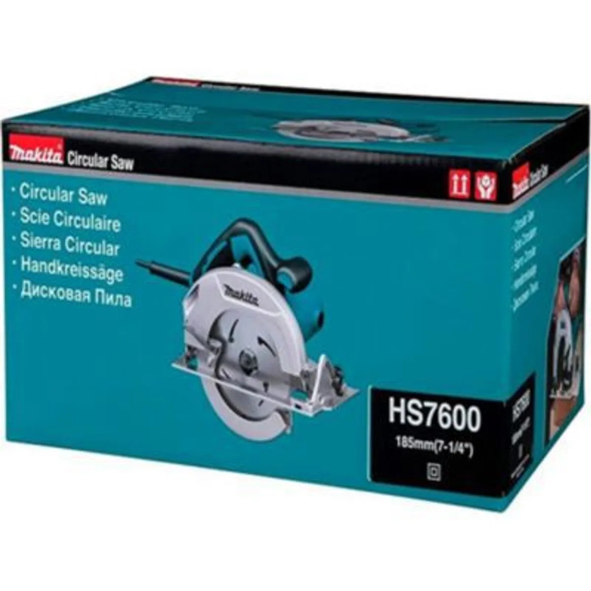

Sierra circular

Herramienta con un disco dentado giratorio que permite cortar piezas de madera y materiales compatibles. La profundidad y el tipo de disco se ajustan según el material y las indicaciones del fabricante.